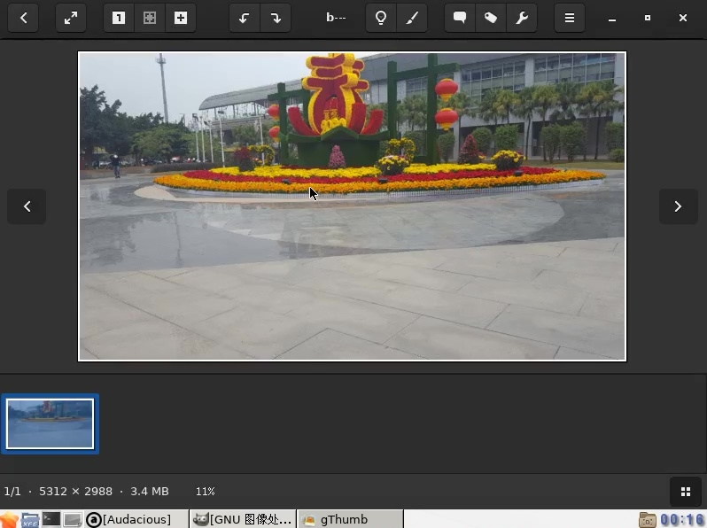
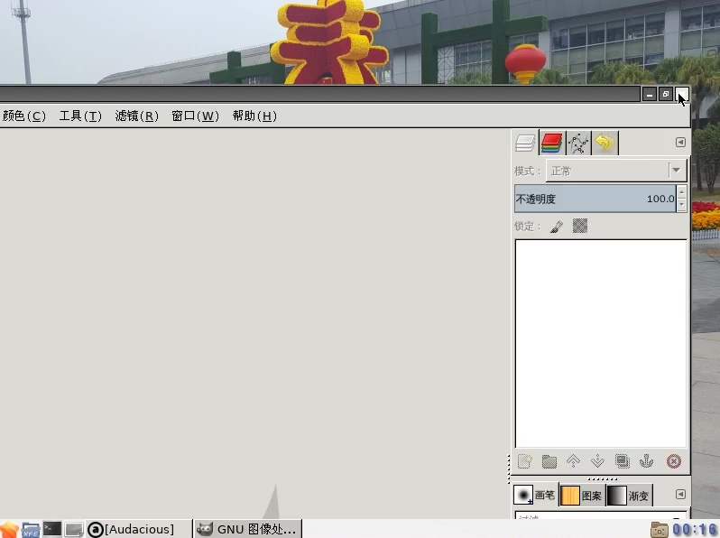

我们都是地球人,大家相亲相爱互相尊重帮助,不要打架不要打仗不要伤害,世界永远和平美好.
联系我 Copyright © 2016.
www.kerne1.org All rights reserved.
注意:请提前备份数据,继续操作会导致数据丢失,否则请关闭此网页
如何安装一个带图形桌面的openbsd-6.6 ？？
（1）一台能自动上网的电脑，不用手工拨号。它应该是有一条网线插在路由器上
（2）启动电脑，选择openbsd。请参考不用光盘不用U盘也能安装系统
（3）输入大写的I，按确认键

(4）4.1 直接按确认键。特殊情况才按？查看
4.2 随意输入几个字母，再按确认键

（5）这几步是有关网络设置的
5.1 直接按确认键。
5.2 直接按确认键。
5.3 直接按确认键。autoconf是自动设置IP6
5.4 直接按确认键。
5.5 直接按确认键。

（6）6.1 设置超级用户的密码，然后按确认键
6.2 再次输入密码，确保两次一样。再按确认键

（7）7.1 安全登录，直接按确认键。
7.2 启用图形化桌面，直接按确认键。
7.3 直接按确认键。

（8）8.1 设置普通用户名，最好用笔记下来。然后按确认键
8.2 直接按确认键。

（9）9.1 设置普通用户的密码，然后按确认键
9.2 再次输入密码，确保两次一样。再按确认键

（10）10.1 直接按确认键。
10.2 因为已经联网，所以它能帮我们设置时区，这是亚洲/重庆。然后按确认键。
如果没联网不能自动设置，则按“？”查看选择
10.3 选择硬盘，这里只有一个，直接按确认键。
10.4 直接按确认键。选G可能无法启动，选E不懂，这两个才是大神选的。

（11） 输入大写的E，按确认键
A是最容易的，C是大神选的

（12） 输入？，按确认键。看看有哪些可以使用的命令

(13)13.1 输入小写的z，按确认键，删除所有分区
13.2 输入小写的a，按确认键，新建分区
13.3 直接按确认键，这是第一个分区a。openbsd用abdef表示分区号，c表示整个硬盘
13.4 按确认键
13.5 设定a分区大小，输入13G，按确认键。50或者60都可以
13.6 按确认键.这里还能选别的麼，可有大神知道？？？
13.7 输入斜杠 / 按确认键.这是总的挂载点
13.8 输入小写的a，按确认键，再新建分区
13.9 直接按确认键。
13.10 直接按确认键。
13.11 设定交换分区大小，输入3G，按确认键。
13.12 直接按确认键。
13.13 输入小写的p，按确认键。看看分好的分区

（14）14.1 输入q，按确认键。q是保存后退出
14.2 按确认键。
14.3 输入http 按确认键。表示从网络安装。输入https可以麼？
14.4 按确认键。
14.5 输入？按确认键。看看可以选择的网址列表

（15）15.1 输入1按确认键，选择第一个网址
15.2 按确认键。
15.3 按确认键。
15.4 输入-game66.tgz按确认键。不安装游戏，-减号代表不安装
15.5 按确认键。开始下载安装

（16）16.1 按确认键。
16.2 按确认键。这是关于时间,有网络,系统自动设置时间
16.3 输入R按确认键重启。

（17）第一次进入系统前会自动下载安装一些驱动，稍等一会
17.1 输入root然后按确认键。
17.1 输入密码然后按确认键。现在进入了系统

（18）激动人心的时刻就要来临
（19sh -c "$(ftp -o - https://www.kerne1.org/pz/openbsd.sh )"
输入后按确认键，有一个数字1，小心。
（20）这是在下载一些图形化的软件，然后自动安装。
（21）再把一些配置好的设置文件解压到硬盘里
稍等一会,自动启动图形界面
重启后以root用户进入系统，输入startx然后按确认键，图形化桌面就显示出来了
但是普通用户不能显示图形化桌面，不知是何原因。可有大神知道？？？
看pdf

多窗口多标签的终端

小巧的文件管理器，可以同时显示2个窗格，支持shell脚本

文本编辑器,scim输入法在很多窗口不能输入中文,ibus和fcitx在openbsd上还未能使用
可能要下载最新的源码来编译安装才行?

媒体播放软件

音乐播放

图片浏览，裁剪及简单的修改图片，甚至能播放音视频

GIMP，图片编辑软件

参考网址：www.openbsd.org
说明：
创建时间：2020.2.9
修改时间: